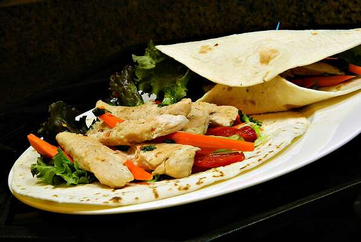

Thai Chicken Wrap

Description
A tasty meal that can be prepped a few days ahead of time, so you can throw it all together for a fast 5-minute lunch. For a cheaper, fresher version, try preparing everything at home. Serve with your favorite store-bought peanut sauce.
Ingredients
-
2 skinless, boneless chicken breast halves
-
salt and ground black pepper to taste
-
¼ cup rice vinegar
-
2 tablespoons chopped fresh cilantro
-
1 tablespoon honey
-
1 tablespoon lime juice
-
1 teaspoon red pepper flakes
-
1 small head lettuce leaves, or to taste
-
2 large flour tortillas
-
3 carrots, peeled and cut into matchsticks
-
1 roasted red bell pepper, sliced
Instructions
-
Place chicken between 2 sheets of plastic wrap on a solid, level surface covered with a towel to minimize noise. Pound chicken flat using the smooth side of a meat mallet.
-
Heat a grill pan to medium-high heat.
-
Place chicken on the hot grill pan; season lightly with salt and pepper. Cook, covered, for 5 minutes. Flip and cook until no longer pink in the center and the juices run clear, 3 to 5 minutes more. An instant-read thermometer inserted into the center should read at least 165 degrees F (74 degrees C).
-
Stir rice vinegar, cilantro, honey, lime juice, and red pepper flakes together in a bowl to make the dressing.
-
Place chicken on a cutting board and chop into strips. Toss into the dressing.
-
Lay a bed of lettuce onto each tortilla; add carrots and roasted red bell pepper. Top with chicken strips; drizzle lettuce with remaining dressing. Wrap tortilla around the filling. Repeat with remaining tortilla.
Back Home